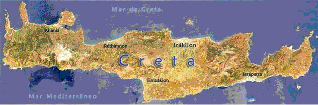

Creta
por Regina Oliveira Rodrigues
Introdução
A Ilha de Creta localiza-se no
sul da Grécia, os cretenses desenvolveram uma cultura sustentada
pelo comércio marítimo. A questão marítima foi tão presente entre os
cretenses que chegaram a dominar regiões do Mediterrâneo.
Entre
3000 e 2000 a.C., os primeiros habitantes da ilha chegaram formando
um conjunto de pequenas cidades. Já nessa época, dominavam técnicas
de manuseio de metais e comercializavam com os egípcios e as
populações das Ilhas Cíclades. A partir do desenvolvimento
comercial, os primeiros grandes centros urbanos apareceram em Creta.
No ano de 1750 a.C. um grande terremoto ou um processo de invasão
territorial interrompeu o desenvolvimento da civilização
cretense.
Durante o governo do Rei Cnossos,
por volta de 1700 a.C., iniciou-se a reorganização dos cretenses.
Várias cidades foram subjugadas à dominação de Cnossos. Vários
pontos comerciais foram criados ao longo do mar Egeu, possibilitando
o soerguimento da economia marítima cretense. Por volta de 1400 a.C.
a invasão dos aqueus abriu um novo período considerado como
primordial para o aparecimento da civilização grega.
Além de organizarem em torno do desenvolvimento
comercial, a civilização cretense também contava com outras
interessantes características. Alguns documentos trazem a idéia de
que a sociedade cretense foi marcada pelo prestígio delegado à
figura feminina. Um dos mais fortes indícios que sustentam essa tese
vem do campo religioso. O culto à Grande Mãe, deusa das terras e da
fertilidade, era uma das muitas manifestações religiosas de Creta.
Após a invasão dos aqueus e dos dórios, a
civilização cretense desapareceu para, anos mais tarde, dar lugar ao
antigo Mundo Grego. Ao contemplarmos alguns traços da cultura
helênica percebemos em que medida os gregos foram influenciados por
essa antiga civilização.
Origens
Creta
é uma das
maiores ilhas do Mediterrâneo. Consiste principalmente em colinas e
montanhas, com alguns vales férteis. Uma estreita planície
estende-se na costa norte, onde se encontram as maiores cidades e
alguma indústria leve. Na costa sul, as montanhas descem
abruptamente para o mar.
A civilização Cretense
passou por três estágios:
- Civilização
egéia;
-
Civilização cretense;
-
Civilização minóica.
Os primeiros habitantes
dessas terras deram origem à Civilização egéia, nome devido ao Mar
Egeu. A maioria da população
era formada por pescadores e marinheiros, por isso eram chamados de
povo do mar.
A Economia na Ilha de
Creta
No início, houve
preocupação com a agricultura de: oliva, vinhedos, trigo, trigo
miúdo, legumes, ameixeira, figueira, e com o comércio marítimo com
as outras ilhas do Mar Egeu, com o Egito e com a Ásia. Com o
comércio marítimo, podiam oferecer saída aos produtos da ilha e de
suas indústrias e meios de obter produtos alimentícios que o solo
não conseguia proporcionar em grande quantidade. Exportavam azeite,
vinho, tecidos, armas de bronze, jóias e uma admirável
cerâmica.
Expandindo-se
pelo mar, os cretenses fundaram diversas colônias, entre as quais
Micenas, Tirinto e Tróia.
 A indústria Cretense era
parcialmente controlada pelo Estado. Fabricavam tecidos,
ferramentas, utensílios domésticos, vasos e jóias. Havia divisão de
trabalho e produção em larga escala.
No século passado, em 1900, o arqueólogo inglês Arthur Evans
descobriu traços e vestígios de grandiosos palácios datados do
século XX a.C. Eram restos das cidades cretenses Cnossos e Festos.
Eram palácios com quartos decorados, oficinas, redes de água e
esgoto. Locais para administração demonstram que os cretenses já
tinham um alto grau de civilização e organização
social. A indústria Cretense era
parcialmente controlada pelo Estado. Fabricavam tecidos,
ferramentas, utensílios domésticos, vasos e jóias. Havia divisão de
trabalho e produção em larga escala.
No século passado, em 1900, o arqueólogo inglês Arthur Evans
descobriu traços e vestígios de grandiosos palácios datados do
século XX a.C. Eram restos das cidades cretenses Cnossos e Festos.
Eram palácios com quartos decorados, oficinas, redes de água e
esgoto. Locais para administração demonstram que os cretenses já
tinham um alto grau de civilização e organização
social.
 Palácio de Cnossos Palácio de Cnossos
A Cultura e o Povo na civilização
Minóica
Em torno de
1750
a.C, uma catástrofe ocorreu em Creta ( não se
sabe ao certo o que foi mas os historiadores acham que foi um
terremoto ou uma explosão vulcânica) e soterrou os palácios reais.
Sobre estas ruínas, o rei Minos, no século XVI a. C., construiu
outros palácios de igual beleza, como o palácio de Cnossos. Foram os
arquitetos Dédalo e Ícaro que o fizeram a mando de
Minos.
O palácio era enorme,
compreendia salas do trono, teatro para espetáculos, torneios e
touradas, tinha vários fins e, a construção, de quatro ou cinco
andares, contava com 1300 divisões. O pátio central tinha mais de
10.000
m2. Era habitado pela família real,
funcionários e servos.
Há uma
interessante lenda sobre o palácio de
Cnossos:
 Luta entre Teseu e o
Minotauro Luta entre Teseu e o
Minotauro
Este magnífico exemplar de rhyton de esteatita
em forma de cabeça taurina é uma obra prima da escultura cretense
neopalaciana.
Os chifres de ouro, a baba de jaspe, os olhos de
cristal de rocha, o perfil de madrepérola indicam a cuidao na
criação deste vaso ritual, talvez destinado a recolher e verter o
líquido para uma libação sagrada, o sangue de um touro ou outra
coisa - não se pode dizer com
exatidão
"Segundo a lenda, os
gregos de Atenas haviam matado um dos filhos do rei cretense.
Para se vingarem dos atenienses, os cretenses declararam guerra à
Atenas e venceram. Exigiram dos vencidos que todos os anos mandassem
sete moças e sete rapazes para acalmar a fome do
Minotauro.
Dizia-se que desse
labirinto ninguém conseguia sair, pois era impossível achar a saída.
Mas um rapaz grego, de nome Teseu, resolveu enfrentar o monstro do
labirinto. Foi secretamente ajudado pela jovem Ariadne, filha do rei
Minos, que lhe deu um novelo de linha para que ele fosse
desenrolando no labirinto e, assim, conseguisse achar o caminho de
volta.
Teseu lutou bravamente
com o touro, conseguiu matá-lo e sair do labirinto. A lenda
permaneceu viva na memória do povo grego por muito
tempo."
Minotauro era um monstro
da mitologia grega, que tinha corpo de homem e cabeça de touro. Era
filho do rei Minos e da rainha Pasífae.
Os cretenses habitavam a
ilha desde os tempos pré-históricos. Pertenciam aos povos
mediterrâneos, não sendo semitas nem indo-europeus, então, não são
descendentes dos mesmos povos da Grécia. Eram pequenos, morenos,
ágeis, cabelos longos, lábios e nariz grossos. Vestiam-se com
elegância e muitas jóias.
Era um povo festivo e
levavam uma vida alegre. Quase não havia distinção entre as classes
sociais. Tanto os homens quanto as mulheres dedicavam muito do seu
tempo aos jogos, exercício físicos ao ar livre, pugilismo, luta de
gladiadores, corridas, torneios, desfiles e touradas.
Realizações do povo
cretense:
- A dança,
acompanhada de cantos e sons;
- Os
teatros ao ar livre, nos pátios dos palácios;
- Enormes potes
da altura do homem, para armazenarem alimentos (serviam, também,
como objetos de decoração, pois eram ricamente
decorados);
- Um
sistema próprio de escrita, gravado em argila (inspirada nos
hieróglifos egípcios);
-
Labirintos com salas e corredores;
- Um
vestuário semelhante à moda do século passado;
- Casas
confortáveis;
-A escultura representada em
miniaturas;
Uma pintura
maravilhosa inspirada na natureza, nos pássaros, nas flores, na vida
à beira-mar , etc., usando principalmente o azul e o
vermelho

Um
friso
em Cnossos
Arte cretense cheia de
fantasia, vida, delicadeza, graciosidade e originalidade,
expressando o gênio de um povo acostumado à independência. Os
artistas eram capazes de representar o momento de fúria de um touro
ou o suave movimento de um polvo. Os artesãos trabalhavam a
cerâmica, o ouro, a prata, o bronze, com os quais faziam lindas
peças e objetos de adorno.
Os cretenses no campo
artístico só foram superados pelos gregos. 
Cnossos tornou-se o
centro político da ilha de Creta, sendo que, o chefe político era um
rei-sacerdote, com diversos poderes, entre eles o religioso,
administrativo e de juiz supremo, podendo governar de forma
absoluta.
A religião era monástica
e matriarcal. A maior atração religiosa era a Deusa-Mãe, que era
considerada a deusa da fecundidade, da maternidade, da terra e dos
homens. Representava o bem e o mal ao mesmo tempo. Era também a
senhora dos animais e a ela eram consagrados os pássaros, leões e
serpentes.
"A presença da mulher em
exibições perigosas e de grande habilidade e também nas festas
aparece em diversas pinturas em cerâmicas e nos afrescos. Essa
valorização da mulher se deve principalmente ao fato de que a
divindade maior de Creta é uma mulher ( a Deusa-Mãe). Daí podemos
concluir que a mulher na sociedade Cretense gozou de uma grande
consideração."
Baseado em Franco di
Trondo, La
Storia e I suol Problemi, Loescher Editore, Torino
, Itália.
Em sua homenagem, o povo
organizava festividades, jogos, torneios, touradas em que os rapazes
se exibiam em perigosos exercícios ginásticos, mas sem matar o
touro, pois o consideravam um animal sagrado.
Também tinham outras
divindades que viviam rodeadas de pássaros, de serpentes, de touros
ou de seres fantásticos com corpo humano e cabeça de animal,
lembrando o Minotauro. Praticavam o culto dos mortos, enterrados com
alimentos, ferramentas e objetos de adorno.
A organização política da civilização
Minóica

Os cretenses, desde os
primeiros tempos, foram agrupados sob a autoridade de príncipes, em
cidades como Cnossos e Faístos. Os príncipes tinham poderes
políticos e religiosos, como os monarcas orientais, porém não eram
tão despóticos como os reis assírios ou persas. Minos possuía um
pequeno exército. Seu emblema era uma flor
-de-lis.
O período Minóico marcou
o período de maior desenvolvimento da ilha de Creta.
Relacionavam-se, freqüentemente, comercialmente, com outros povos do
Mediterrâneo. Assim, utilizavam um sistema de pesos e medidas,
inspirados nos egípcios e mesopotâmicos. Possuíam moedas de cobre de
diferentes valores, para transações comerciais. As moedas,
geralmente, traziam o desenho de um labirinto.
Essa civilização parou,
novamente, no século XIV, por causa de outra catástrofe. Nessa
época, os aqueus, vindos da Grécia, ocuparam a ilha de Creta,
incediando Cnossos, pondo fim nessa Civilização que floresceu de
3000
a 1400 a.C
aproximadamente.
A Ilha de Creta
Atualmente
As ilhas do Egeu, no mar
de mesmo nome, são em geral rochosas, especialmente ao sul. As ilhas
do norte compreendem Quios, Lesbos, Lemnos, Samotrácia e o grupo das
Cíclades, uma das áreas mais atrasadas da Grécia, e as do
Dodecaneso. A histórica Rodes, a maior desse grupo, é importante
atração turística.

Mapa
Atual

Linha do
tempo:
- 2400 a. C –
expansão comercial no Mar Mediterrânico
- 2000 a. C. –
apogeu da supremacia marítima
- 2000 a
1600
a. C. – escrita linear A (Disco de Festo).
- 1700 a. C. –
possível catástrofe ( terremoto ou invasão
militar)
- 1450 a. C. –
invasão dos Aqueus
- 1400 a. C. –
outra possível catástrofe
- 1200 a
1100
a. C. – invasão dos dórios.
- 67 a. C. –
dominação romana
- 395 – faz parte do
Império Romano do Oriente.
|